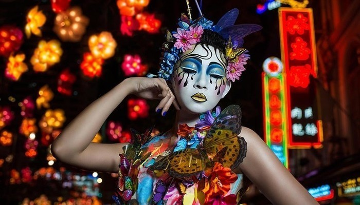

Culture
Singapore's national language is Malay. There are four official languages in Singapore: Malay, English, Chinese, and Tamil, and you'll probably also hear Singlish - the unique mix of Singapore's official languages and English. 75% of Singaporeans are ethnically Chinese, mostly from the Hokkien or Teochew communities. An estimated 6% of Singaporeans are Tamil, heralding from Southern India, and about 15% are Malay Muslims. That leaves 4% of Singaporeans with mixed or other heritage. Singapore's flag is red and white with a crescent moon and five stars. The five stars symbolize five ideals - democracy, peace, progress, justice and equality - while the moon symbolizes a rising nation (it was founded in 1965). The white suggests purity while the red denotes the equality of mankind. Singaporeans are very polite and there's a good reason for that. The government taught manners under the National Courtesy Campaign. While the manners campaign has been running since the 1970s, it got a rebranding in 2001, and is better known now as Singapore Kindness Movement.